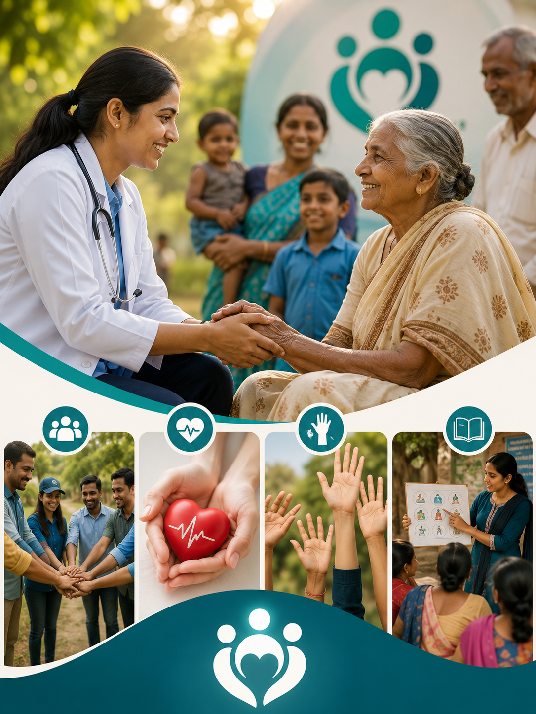
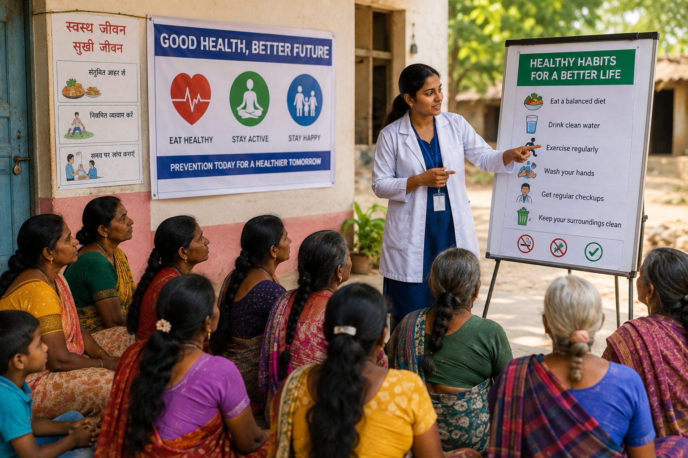
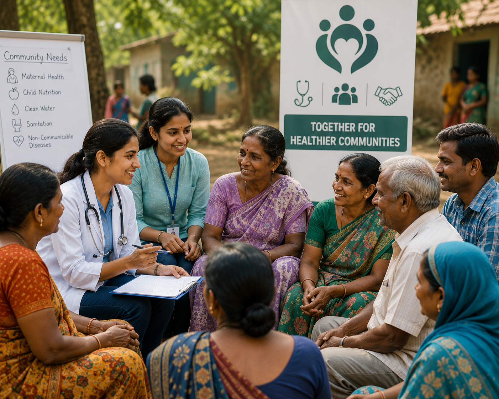
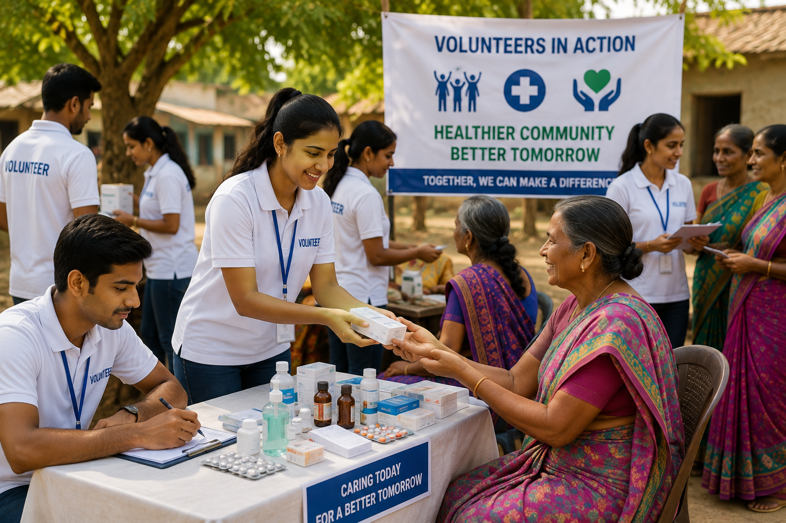
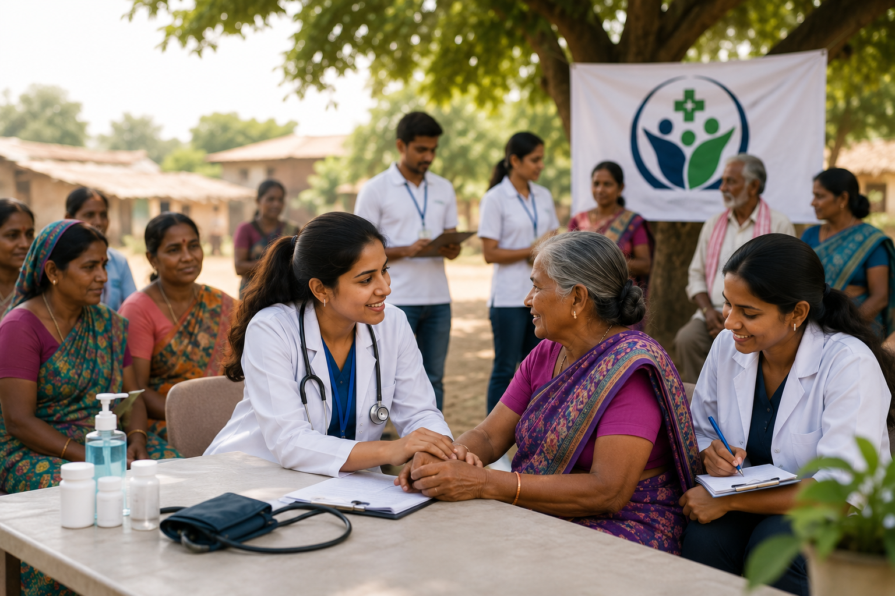
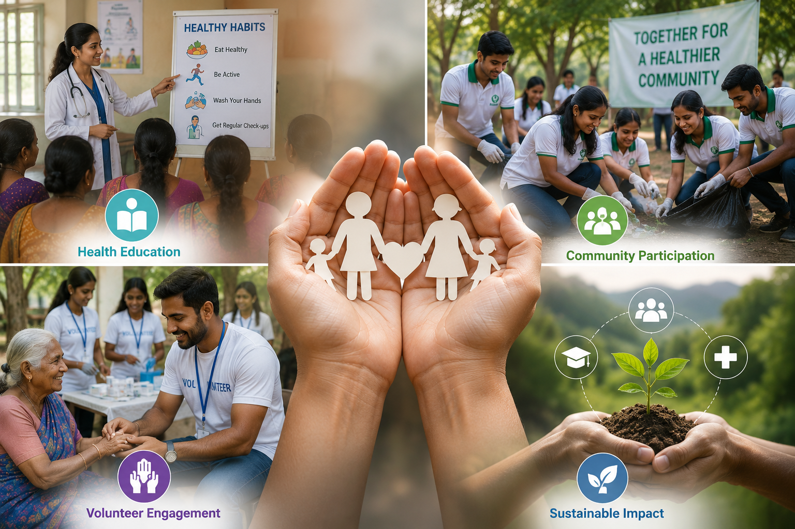

Community Healthcare
Community Outreach
Empowering communities through healthcare awareness, preventive education, wellness initiatives, and compassionate outreach programs that improve lives and promote healthier futures.

Empowering communities through healthcare awareness, preventive education, wellness initiatives, and compassionate outreach programs that improve lives and promote healthier futures.

Our Community Outreach Program is dedicated to improving the well-being of individuals and families through health awareness campaigns, preventive care initiatives, educational workshops, and volunteer-driven community services.
By collaborating with healthcare professionals, local organizations, and volunteers, we strive to create lasting positive change and ensure that quality healthcare knowledge reaches every community.
Our outreach initiatives focus on promoting healthier lifestyles, preventive healthcare, and stronger community participation.

Conducting awareness drives on nutrition, hygiene, disease prevention, and healthy living practices.

Providing educational sessions that empower individuals with essential healthcare knowledge and preventive care.

Encouraging volunteers to actively participate in healthcare outreach and social welfare activities.

Working with local communities to identify healthcare needs and provide meaningful support through collaborative efforts.

Community outreach bridges the gap between healthcare providers and the people who need them most. Through education, preventive care, and active engagement, we empower communities to take charge of their health and well-being.
Educating individuals about preventive healthcare and healthy lifestyles.
Encouraging people to actively participate in health and wellness initiatives.
Building a network of dedicated volunteers to support community programs.
Creating long-term improvements in healthcare awareness and community well-being.
Together, we can improve lives through healthcare awareness, education, and compassionate community service. Your support helps us reach more people and create lasting impact.
Become a Volunteer